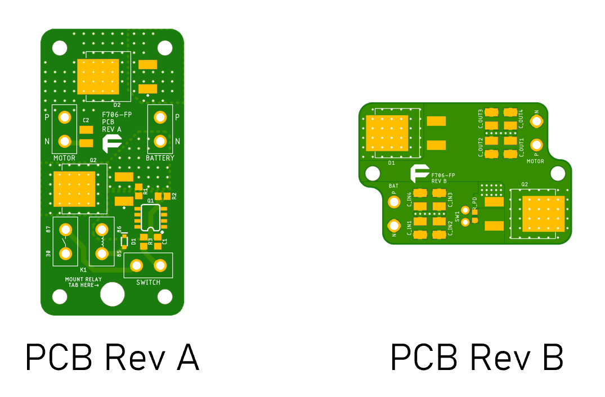
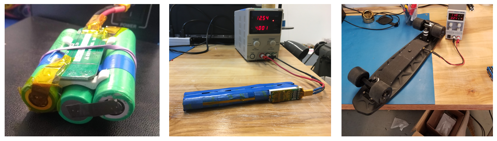
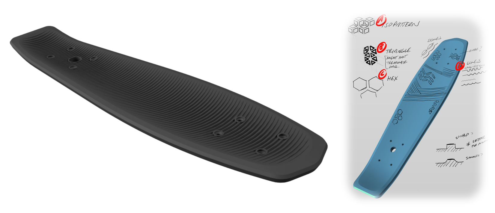
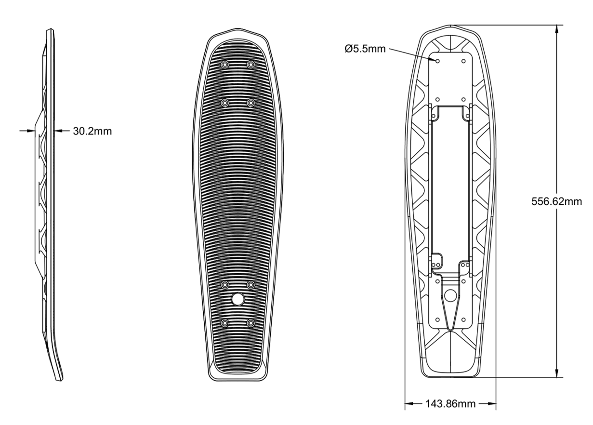
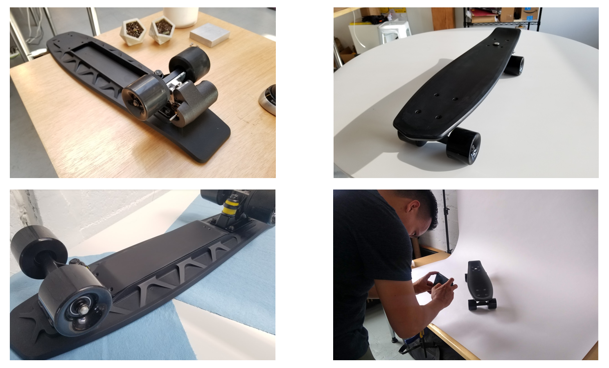
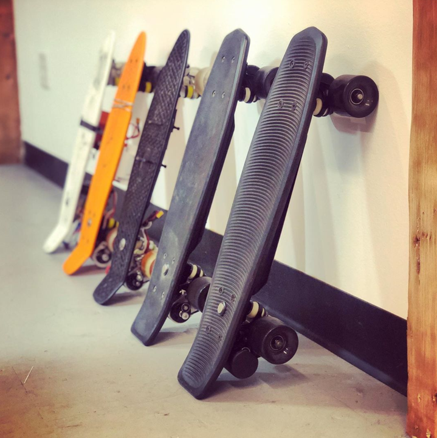

Hermes, or the Headless Electric Skateboard was a project I got to work on during my time at Facture Product Design. Hermes was an internal project, meaning that it was born in house, conceptualized by and to be sold by Facture. Check out the Headless boards page here!!! In short, the product is a low cost, Pennyboard-sized electric skateboard. Rather than a remote, it uses a button on the back end of the board to activate the motor. After kicking, the user can step on the board to go, leaving hands free to carry bags, eat food, or even wave to your friends.
"Experience the joy of electric skateboarding without the learning curve or expensive entry price. The Headless Electric Cruiser is a refreshing spin on what it means to be an electric skateboard."
I ended up being a large driving force in many different parts of the product. This included designing of the electrical system, fine tuning the batteries, developing the deck, manufacturing parts, testing the board, and developing media for launch. This was one of my favorite projects for a variety of reasons:
The main selling point of the Headless boad is its remarkably low price ($199), beating out competitors by several magnitudes. We were able to make this price point work by rethinking the entirety of the architecture of a standard electric skateboard. If you look to models on the market currently, they all make use of an untethered remote control, a electronic speed controller (ESC), and a brushless motor. Being able to cut these parts out and have a bare-bones approach to making a board on four wheels go (FAST!) was our way to edge out the competition.
However, cutting these heavily standardized parts was no easy task. We first had to consider how to make the electronics work consistently and safely. The innovation here was taking advantage of a motor's back EMF, or the voltage it generates from spinning. By having a two way check of making sure the wheel is already moving (from a user's initial push) and the trigger button is pressed, we can ensure that there will not be any intense load that the motor needs to overcome. It rather just has to keep the board moving after it already has started. The challenges after this involved detecting this double check with as few components as possible on an analog level.
Though our first go at the PCB was functional, it highlighted several problems. First, we had to rethink how we were going to attach wires to the board. Because the motor draws a large amount of current, we needed to use very thick wires (14 gauge). These stiff wires made the wiring hard to work with and cost a lot of space, something we were trying to minimize. Additionally, we needed better ways to tune the PCB to accept different thresholds for the back EMF of the motor.
Our version 2 solved a lot of these problems. First, we changed the shape to include more stable mountin holes and cutouts such that the wire harness could attach securely, minimizing the stress on the solder joints. A simple voltage divider was also added to artificially vary the EMF threshold for activation by putting different SMD resistors on the board. This modular design allowed us to use the same board to test different thresholds and speeds. The two versions are shown below.
Another critical portion of Hermes I made strides on was the battery system. This included actually constructing the battery from 18650s and tab welding to sourcing a battery management system (BMS) to conducting research on making a decision between a 3s and 6s cell. Additionally, I also worked on establishing battery dimensions and seamlessly fitting the battery into the deck.
Any consumer product needs to go through rigorous testing to have relible user specifications. For our product, we need to specify the maximum speed, range, hill grade, and liftetime of both the battery and the motor. To begin to record these parameters, we first constructed a data logging box. This box included a small Arduino, an SD card reader, and sensors to measure the voltage of the battery, the current draw of the motor, and the temperature of the motor. These parameters were recorded during user testing (me riding up and down a street A LOT), giving us a picture of the battery level during different types of terrain and use.


Another addition I worked on was the redesign of the motor mount. When I started working at Facture, the team was experimenting with motor mounts and started with a PETG 3D printed version as seen below on the left. This was good for testing but had a lot of slop in it both in tolerancing and durability. Additionally, we needed to securely fasten the motor to a standard mass produced skateboard truck using the simplest means to minimize labor and cost of production.
The new version utilized CNC manufacturing to cut profiles from a 1/4" aluminum plate. This not only provided a simpler design but also was a very robust way to make sure nothing fell apart. One piece was bolted on to the trucks, holding two C-shaped pieces perpendicularly. A spacer was placed between the two pieces and could be screwed to connect the two "ends" of the C to tighten or loosen the motor mount. This adjustability gave us a lot of flexibility and modularity to test different motors and adapt to any changes faced by the system. The team is now aiming to have the motor mount self tension the belt drive using a spring.

We wanted to really differentiate the look of the Headless board. This meant that the original Penny board style deck with a diamond lattice pattern would not fly. We explored adding grip tape and several other geometric designs in both aesthetics and functionality to actually grip. After doing a good amount of concept sketching we chose a rounded jagged teeth pattern that not only gave the functional friction, but also looked pretty awesome.
One really cool part of this project was gettin the opportunity to directly connect to large manufacturers, both oversees and in our own city. This involved making detailed machine drawings, negotiation about different costs, considering production methods, and comparing materials for the various parts. Additionally, it was great experience to learn about scale and how to maximmize profit by estimating the sales of a product.
Lastly, I was a large part of helping shoot aesthetic prototype shots, developing the website, and filming the trailer for the product. This was something that I had little experience with before but really had a blast doing. Go check out our product page and maybe buy a Headless board while you're at it!
 